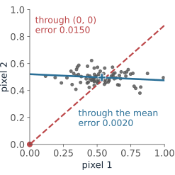
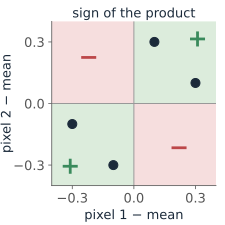
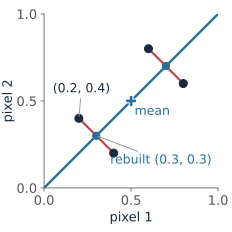
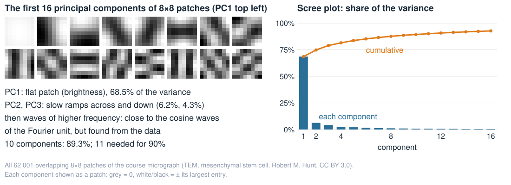
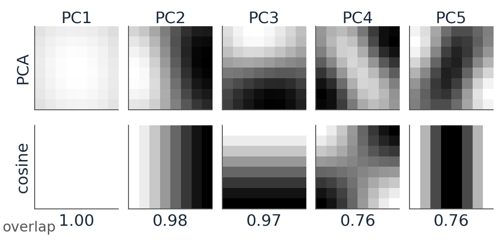
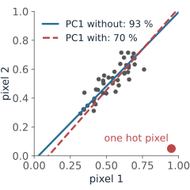

The Fourier unit rewrote an image in a fixed basis of waves. PCA finds a basis from the data: the directions in which a set of images (or patches, or pixels) actually varies.
Many small images are a cloud of points: one axis per pixel.
Centre the cloud, then find the direction of most spread: the first principal component.
The covariance matrix holds all the spreads; its eigenvectors are the principal components.
Keep a few scores, rebuild the rest: projection and reconstruction, and how many components to keep.
Take two neighbouring pixels of a smooth image: a tiny image with two grey values (p_1, p_2). Draw it as a point, pixel 1 across, pixel 2 up.
150 such pairs make a cloud. The two pixels are almost equally bright, so it lies along the diagonal.
The cloud is long in one direction (overall brightness of the pair) and thin in the other (the small difference, a tiny edge).
One number, the position along the blue line, almost describes each pair. Red: what that one number misses.
A 28 \times 28 image is a point with 784 coordinates. Same idea; we just cannot draw it.
Step 1: centre the cloud
Subtract the mean image\bar{\mathbf x} (the average of each pixel) from every image.
The cloud now sits around the origin. Directions are measured from the centre of the data, not from black (0, 0).
Without centring, the “best direction” through (0, 0) mostly points at the mean: it describes how bright the images are on average, which we already know, instead of how they differ.
Every later step works on the centred images \mathbf x - \bar{\mathbf x}; the mean is added back at the end.

Spread along a direction
Pick a direction: a unit vector\mathbf u (length 1). Each centred image gets one number, its score:
s = \mathbf u \cdot (\mathbf x - \bar{\mathbf x}) \qquad \text{(how far along } \mathbf u \text{ the image lies)}
The scores of all images have a variance: the spread of the cloud along\mathbf u.
Turn \mathbf u: the variance changes. For the neighbouring pixels it is largest along the diagonal, smallest across it.
PC1 (first principal component) = the direction of largest variance. PC2 = the largest among the directions perpendicular to PC1 (in 2D: simply the perpendicular).
Diagonal: the variance of each pixel (0.05 each). Off-diagonal: the covariance, positive because the pixels tend to be bright together.
The variance along any unit vector \mathbf u follows from S alone (math slide). Along the diagonal \mathbf u = (1, 1)/\sqrt2: 0.08. Across it, (1, -1)/\sqrt2: 0.02. Along pixel 1, (1, 0): 0.05.

The math: the best direction is an eigenvector
Centred images \mathbf y_i = \mathbf x_i - \bar{\mathbf x}, covariance S = \frac1n\sum_i \mathbf y_i\mathbf y_i^\top (symmetric, d \times d). The variance of the scores along a unit vector \mathbf u:
\frac1n\sum_i (\mathbf u^\top\mathbf y_i)^2 = \frac1n\sum_i \mathbf u^\top\mathbf y_i\,\mathbf y_i^\top\mathbf u = \mathbf u^\top S\,\mathbf u.
Maximise \mathbf u^\top S\mathbf u subject to \mathbf u^\top\mathbf u = 1. With a Lagrange multiplier \lambda, setting the gradient of \mathbf u^\top S\mathbf u - \lambda(\mathbf u^\top\mathbf u - 1) to zero:
2S\mathbf u - 2\lambda\mathbf u = 0 \quad\Longleftrightarrow\quad S\mathbf u = \lambda\mathbf u, \qquad \text{and then } \mathbf u^\top S\mathbf u = \lambda.
So the stationary directions are the eigenvectors of S, and the variance along each is its eigenvalue. The largest eigenvalue \lambda_1 gives PC1.
S is symmetric, so (spectral theorem) its eigenvectors can be chosen orthonormal, and all \lambda_k \ge 0. Order them descending: \lambda_1 \ge \lambda_2 \ge \dots \ge \lambda_d.
For S = \begin{pmatrix} a & b \\ b & a \end{pmatrix}: eigenvectors (1, \pm1)/\sqrt2, eigenvalues a \pm b. The example: 0.05 \pm 0.03.
Principal components: new axes for the data
The eigenvectors \mathbf u_1, \mathbf u_2, \dots of S, ordered by eigenvalue (largest first), are the principal components.
They are perpendicular to each other: a rotated set of axes, fitted to the cloud.
The eigenvalue\lambda_k is the variance of the scores along \mathbf u_k.
In the new axes the scores are uncorrelated: the cloud’s tilt is gone.
Nothing is lost by rotating: the total variance (sum of the pixel variances) equals \lambda_1 + \lambda_2 + \dots. In the example 0.05 + 0.05 = 0.08 + 0.02.
Share of PC1: 0.08 / 0.10 = 80\,\%. For the 150 neighbouring pixel pairs: 93\,\%.
Projection and reconstruction
Keep only the first k scores, s_j = \mathbf u_j \cdot (\mathbf x - \bar{\mathbf x}), and rebuild:
The example, k = 1, image (0.2, 0.4), \mathbf u_1 = (1, 1)/\sqrt2:
Score s_1 = \big((-0.3) + (-0.1)\big)/\sqrt2 = -0.283: the pair is darker than average.
Rebuilt: (0.5, 0.5) + s_1\,\mathbf u_1 = (0.5, 0.5) - (0.2, 0.2) = (0.3, 0.3): same brightness, the difference is gone.
Error (0.2, 0.4) - (0.3, 0.3) = (-0.1, 0.1), squared length 0.02. All four images lose 0.02: the mean error is \lambda_2 = 0.02, the variance that was dropped.
With all components the reconstruction is exact: rotate, rotate back. The saving comes from keeping few.

The math: the error is the sum of the dropped eigenvalues
Write a centred image in the PC basis: \mathbf y = \sum_{j=1}^d s_j\mathbf u_j with s_j = \mathbf u_j^\top\mathbf y. Keeping the first k terms leaves \mathbf y - \hat{\mathbf y} = \sum_{j > k} s_j\mathbf u_j, and since the \mathbf u_j are orthonormal,
For one direction \mathbf u (not necessarily a PC): mean error = \operatorname{tr}S - \mathbf u^\top S\mathbf u (Pythagoras for each image). Smallest error ⇔ largest variance kept: the same \mathbf u_1.
More generally (Eckart–Young): no k-dimensional flat subspace through the mean fits the images better in squared error than the first k PCs.
The scores are uncorrelated: \frac1n\sum_i s_{ij}s_{il} = \mathbf u_j^\top S\mathbf u_l = \lambda_l\,\mathbf u_j^\top\mathbf u_l = 0 for j \ne l.
How many components? The scree plot

Plot the eigenvalues, largest first (a scree plot), or the cumulative share of the variance.
Keep components up to the “elbow”, or until a target share is reached (90 %: here 11 of 64 numbers per patch).
The small eigenvalues are often mostly noise: dropping them also denoises.
PCA and Fourier: two changes of basis
Both rewrite an image (or patch) as a weighted sum of basis images, with orthonormal basis vectors: rotate, keep the important coefficients, rotate back.
Fourier (DFT/DCT)
PCA
basis
fixed waves, the same for every image set
learned from the data: eigenvectors of S
order
by frequency
by variance in these data
best for
any image; fast to compute
the data it was fitted on: fewest components for a given error
On the micrograph’s patches, the PCs look like waves: flat, then slow ramps, then faster patterns. PC1–3 match the three lowest cosine waves (overlap 0.97 or more). For images whose statistics are the same everywhere, PCA and cosines nearly agree, which is why JPEG can use the fixed cosines.
On a special data set (faces, cell shapes, one kind of tissue) the learned basis wins.

Colour pixels: three numbers per pixel
A colour pixel (R, G, B) is a point in 3D; the pixels of a photograph are a cloud.
In most scenes the three channels rise and fall together (light and shadow change all three). PC1 points close to (1, 1, 1)/\sqrt3: brightness, carrying most of the variance.
PC2 and PC3 are colour differences (e.g. red against blue, green against magenta), with much less variance.
That is why image formats store brightness plus two colour differences, and give the differences fewer bits or fewer pixels: the decorrelation PCA would find, fixed in advance.
For a stained tissue section the PCs follow the stains, not the screen colours: a starting point for separating them.
When PCA misleads
Outliers: variance is a sum of squares, so one hot pixel or one bad image can turn PC1 (demo: “one outlier”).
Units: mix a cell area in µm² with an intensity in [0, 1], and PC1 is simply “area”. Standardise each feature (divide by its standard deviation) first when units differ.
Nearly equal eigenvalues: a round cloud has no preferred direction; the PCs swing when one point moves. Report the subspace, not the individual axes.
Curved clouds: PCA fits flat subspaces. Images of a moving spot lie on a curve; one PCA score folds it. A nonlinear autoencoder can follow it (autoencoders).
PCA finds directions of variance, not of meaning: the largest spread may be lighting, not biology.

Summary
Idea
In one line
Image as a point
one axis per pixel; a set of images is a cloud
Centre
subtract the mean image first
Covariance S
pixel variances on the diagonal, covariances off it
Principal components
eigenvectors of S, largest eigenvalue first; perpendicular; scores uncorrelated
Eigenvalue
the variance along that component; they add up to the total variance
Reconstruction
mean + scores × components; error = the dropped eigenvalues
Scree plot
how many components carry most of the variance
vs Fourier
both a change of basis: Fourier fixed, PCA learned from the data